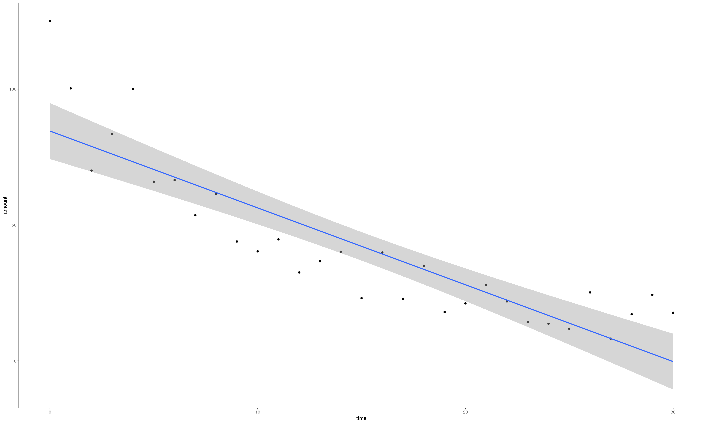
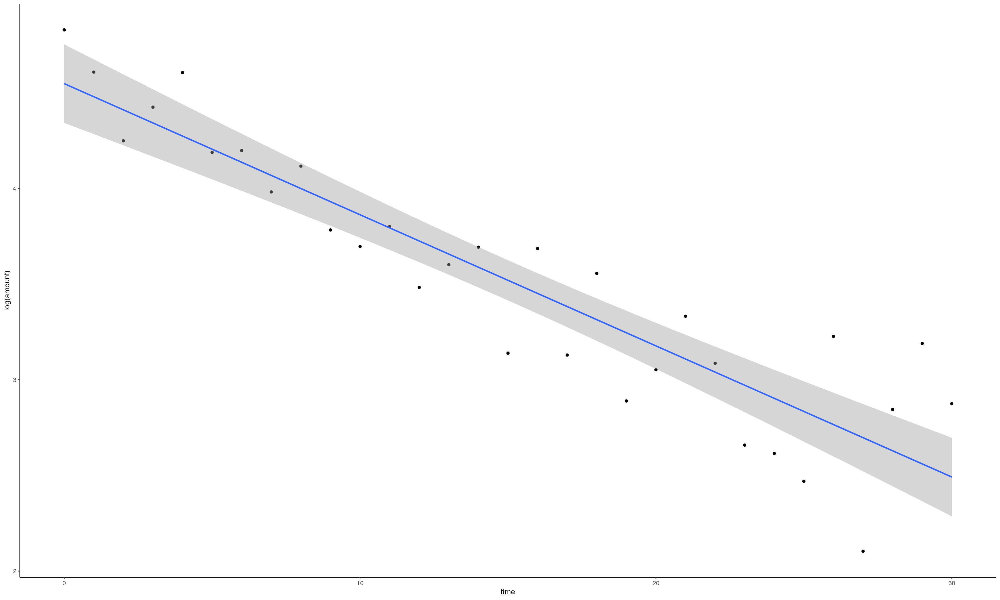
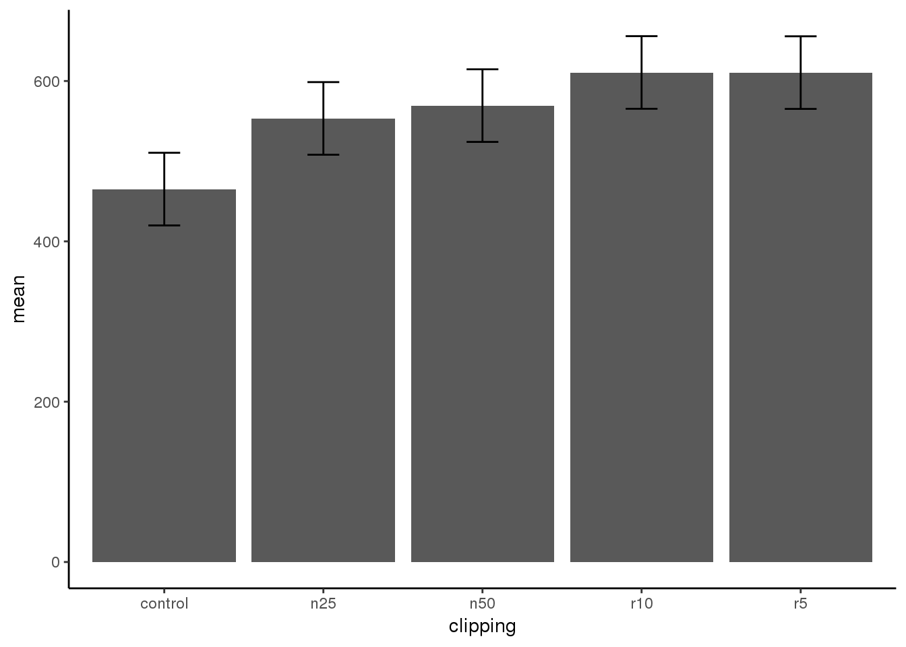
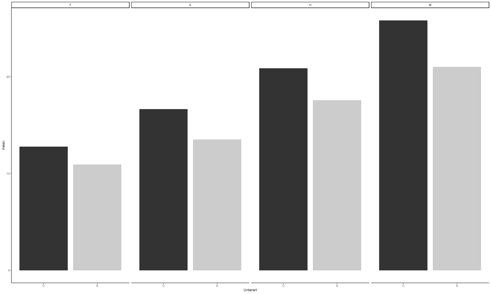

6.4 Lösung
6.4.1 Musterlösung Aufgabe 3
library(tidyverse)Aus Crawley (2015 S. 162) (Scripts angepasst)
There are two traditional ways of plotting the results of ANOVA:
- box-and-whisker plots
- barplots with error bars
We have an experiment on plant competition where the response variable is biomass and we have one factor with five levels. The factor is called cl ipping and the levels are control (i.e. unclipped), two intensities of shoot pruning and two intensities of root pruning:
comp <- read_delim("13_Statistik1/data/competition.csv",",")
ggplot(comp, aes(clipping, biomass)) +
geom_boxplot(fill = "lightgrey") +
labs(x = "Competition treatment", y = "Biomass")
The box-and-whisker plot is good at showing the nature of the variation within each treatment, and also whether there is skew within each treatment (e.g. for the control plots, there is a wider range of values between the median and upper quartile than between the lower quartile and median). No outliers are shown above the whiskers, so the tops and bottoms of the bars are the maxima and minima within each treatment. The medians for the competition treatments are all higher than the upper quartile of the controls, suggesting that they may be significantly different from the controls, but there is little to suggest that any of the competition treatments are significantly different from one another (see below for the analysis).
Barplots with error bars are the style preferred by many journal editors, and some people think that they make hypothesis testing easier. We shall see.
comp_summary <- comp %>%
group_by(clipping) %>%
summarise(
mean = mean(biomass)
)Now draw the barplot, making sure that the y axis is long enough to accommodate the tops of the error bars that we intend to add later:
p <- ggplot(comp_summary, aes(clipping, mean)) +
geom_bar(stat = "identity")
p
This is fine as far as it goes, but it gives us no impression of the uncertainty associated with the estimated heights of the bars.
Let us use one standard error of the mean based on the pooled error variance from the ANOVA, then return to a discussion of the pros and cons of different kinds of error bars later. Here is the one-way ANOVA:
t <- aov(biomass~clipping, comp)
summary(t)
## Df Sum Sq Mean Sq F value Pr(>F)
## clipping 4 85356 21339 4.302 0.00875 **
## Residuals 25 124020 4961
## ---
## Signif. codes: 0 '***' 0.001 '**' 0.01 '*' 0.05 '.' 0.1 ' ' 1There was equal replication (which makes life easier), and each mean was based on six replicates, so the standard error of the mean is \(\sqrt{\frac{s^2}{n}} = \sqrt{\frac{4961}{6}} = 28.75\)
We shall draw an error bar up 28.75 from each mean and down by the same distance, so we need five values, one for each bar, each of 28.75:
comp_summary <- comp %>%
group_by(clipping) %>%
summarise(
mean = mean(biomass),
se = sqrt(4691/n())
)
comp_summary
## # A tibble: 5 x 3
## clipping mean se
## <chr> <dbl> <dbl>
## 1 control 465. 28.0
## 2 n25 553. 28.0
## 3 n50 569. 28.0
## 4 r10 611. 28.0
## 5 r5 610. 28.0Now we can use the new function to add the error bars to the plot:
ggplot(comp_summary, aes(clipping, mean)) +
geom_bar(stat = "identity") +
geom_errorbar(aes(ymin = mean-se, ymax = mean+se),width = 0.2)
We do not get the same feel for the distribution of the values within each treatment as was obtained by the box-and-whisker plot, but we can certainly see clearly which means are not significantly different. If, as here, we use ± 1 standard error as the length of the error bars, then when the bars overlap this implies that the two means are not significantly different. Remember the rule of thumb for t: significance requires 2 or more standard errors, and if the bars overlap it means that the difference between the means is less than 2 standard errors.This shows clearly that none of the means for the clipped plants (n25, n50, r10 or r5) is significantly different from any other (the top of the bar for n25 overlaps the bottom of the bar for r10).
There is another issue, too. For comparing means, we should be using the standard error of the difference between two means (not the standard error of one mean) in our tests (see p. 91); these bars would be about 1.4 times as long as the bars we have drawn here. So while we can be sure that the pruning treatments are not significantly different from one another, we cannot conclude from this plot that the controls have significantly lower biomass than the rest (because the error bars are not the correct length for testing differences between means).
An alternative graphical method is to use 95% confidence intervals for the lengths of the bars, rather than standard errors of means. This is easy to do: we multiply our standard errors by Student’s t, qt ( .975,5) = 2.570582, to get the lengths of the confidence intervals:
comp_summary <- comp %>%
group_by(clipping) %>%
summarise(
mean = mean(biomass),
se = sqrt(4691/n())
) %>%
mutate(
ci = se*qt(0.975,5)
)
ggplot(comp_summary, aes(clipping, mean)) +
geom_bar(stat = "identity") +
geom_errorbar(aes(ymin = mean-ci, ymax = mean+ci),width = 0.2)
comp_summary <- comp %>%
group_by(clipping) %>%
summarise(
mean = mean(biomass),
se = sqrt(4691/n())
) %>%
mutate(
ci = se*qt(0.975,5),
lsd = (qt(0.975,10)*sqrt(2*4961/6))/2
)
ggplot(comp_summary, aes(clipping, mean)) +
geom_bar(stat = "identity") +
geom_errorbar(aes(ymin = mean-lsd, ymax = mean+lsd),width = 0.2)
6.4.2 Musterlösung Aufgabe 4
library(readr)
library(dplyr)
library(car)
library(gmodels)
library(ggfortify)
library(pander)
library(stargazer)
nova <- read_delim("13_Statistik1/data/novanimal.csv", delim = ";")chisq.test(nova$gender, nova$label_content)
##
## Pearson's Chi-squared test
##
## data: nova$gender and nova$label_content
## X-squared = 55.514, df = 4, p-value = 2.536e-11
CrossTable(nova$gender, nova$label_content, chisq = T) # Alternative zu chisq.test
##
##
## Cell Contents
## |-------------------------|
## | N |
## | Chi-square contribution |
## | N / Row Total |
## | N / Col Total |
## | N / Table Total |
## |-------------------------|
##
##
## Total Observations in Table: 1084
##
##
## | nova$label_content
## nova$gender | Fleisch | Hot and Cold | Pflanzlich | Pflanzlich+ | Vegetarisch | Row Total |
## -------------|--------------|--------------|--------------|--------------|--------------|--------------|
## F | 161 | 93 | 20 | 27 | 114 | 415 |
## | 12.635 | 19.093 | 0.760 | 0.119 | 1.654 | |
## | 0.388 | 0.224 | 0.048 | 0.065 | 0.275 | 0.383 |
## | 0.290 | 0.600 | 0.465 | 0.409 | 0.432 | |
## | 0.149 | 0.086 | 0.018 | 0.025 | 0.105 | |
## -------------|--------------|--------------|--------------|--------------|--------------|--------------|
## M | 395 | 62 | 23 | 39 | 150 | 669 |
## | 7.838 | 11.844 | 0.472 | 0.074 | 1.026 | |
## | 0.590 | 0.093 | 0.034 | 0.058 | 0.224 | 0.617 |
## | 0.710 | 0.400 | 0.535 | 0.591 | 0.568 | |
## | 0.364 | 0.057 | 0.021 | 0.036 | 0.138 | |
## -------------|--------------|--------------|--------------|--------------|--------------|--------------|
## Column Total | 556 | 155 | 43 | 66 | 264 | 1084 |
## | 0.513 | 0.143 | 0.040 | 0.061 | 0.244 | |
## -------------|--------------|--------------|--------------|--------------|--------------|--------------|
##
##
## Statistics for All Table Factors
##
##
## Pearson's Chi-squared test
## ------------------------------------------------------------
## Chi^2 = 55.51357 d.f. = 4 p = 2.535837e-11
##
##
##
chisq.test(nova$member, nova$gender)
##
## Pearson's Chi-squared test with Yates' continuity correction
##
## data: nova$member and nova$gender
## X-squared = 2.4114, df = 1, p-value = 0.1205
CrossTable(nova$member, nova$gender, chisq = T)
##
##
## Cell Contents
## |-------------------------|
## | N |
## | Chi-square contribution |
## | N / Row Total |
## | N / Col Total |
## | N / Table Total |
## |-------------------------|
##
##
## Total Observations in Table: 1095
##
##
## | nova$gender
## nova$member | F | M | Row Total |
## --------------|-----------|-----------|-----------|
## Mitarbeitende | 142 | 196 | 338 |
## | 1.117 | 0.698 | |
## | 0.420 | 0.580 | 0.309 |
## | 0.337 | 0.291 | |
## | 0.130 | 0.179 | |
## --------------|-----------|-----------|-----------|
## Studierende | 279 | 478 | 757 |
## | 0.499 | 0.311 | |
## | 0.369 | 0.631 | 0.691 |
## | 0.663 | 0.709 | |
## | 0.255 | 0.437 | |
## --------------|-----------|-----------|-----------|
## Column Total | 421 | 674 | 1095 |
## | 0.384 | 0.616 | |
## --------------|-----------|-----------|-----------|
##
##
## Statistics for All Table Factors
##
##
## Pearson's Chi-squared test
## ------------------------------------------------------------
## Chi^2 = 2.624707 d.f. = 1 p = 0.1052119
##
## Pearson's Chi-squared test with Yates' continuity correction
## ------------------------------------------------------------
## Chi^2 = 2.411365 d.f. = 1 p = 0.1204573
##
## 6.4.3 Musterlösung Aufgabe 5
# Daten müssen zuerst nach Kalenderwochen und Kondition zusammengefasst werden
df <- nova %>%
group_by(condit, week) %>% #
summarise(tot_sold = n())
leveneTest(df$tot_sold, df$condit)
## Levene's Test for Homogeneity of Variance (center = median)
## Df F value Pr(>F)
## group 1 0.4923 0.5216
## 4Der t-Test für unabhängige Gruppen setzt Varianzhomogenität voraus. Liegt Varianzheterogenität vor (also unterschiedliche Varianzen), so müssen unter anderem die Freiheitsgerade des t-Wertes angepasst werden. Ob die Varianzen nun homogen (“gleich”) sind, lässt sich mit dem Levene-Test auf Varianzhomogenität prüfen. Dieser Test ist eine Variante des F-Tests.
Der Levene-Test verwendet die Nullhypothese, dass sich die beiden Varianzen nicht unterscheiden. Daher bedeutet ein nicht signifikantes Ergebnis, dass sich die Varianzen nicht unterscheiden und also Varianzhomogenität vorliegt. Ist der Test signifikant, so wird von Varianzheterogenität ausgegangen (Quelle: www.uzh.ch).
t.test(df[df$condit == "Basis", ]$tot_sold, df[df$condit == "Intervention", ]$tot_sold, var.equal = F, alternative = "less") # siehe gerichtete Hypothese
##
## Welch Two Sample t-test
##
## data: df[df$condit == "Basis", ]$tot_sold and df[df$condit == "Intervention", ]$tot_sold
## t = 2.0553, df = 2.9949, p-value = 0.9339
## alternative hypothesis: true difference in means is less than 0
## 95 percent confidence interval:
## -Inf 25.03471
## sample estimates:
## mean of x mean of y
## 188.3333 176.6667
# boxplot
ggplot(df, aes(x = condit, y= tot_sold)) +
geom_boxplot(fill = "lightgrey") +
labs(x="Bedingungen", y="Anzahl verkaufte Gerichte")
Statistik 8 (20.11.2018)
Crawley, Michael J. 2015. Statistics: An Introduction Using R. Wiley. http://onlinelibrary.wiley.com/book/10.1002/9781119941750.